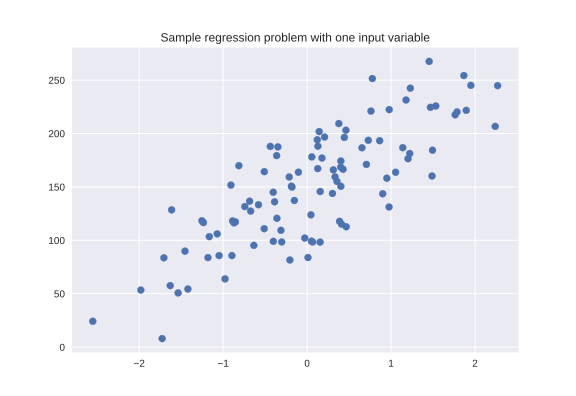

Linear models for regression can be characterized as regression models for which the prediction
is a line for
a
single feature, a plane when using two features, or a hyperplane in higher demensions(more features). The
difference between the following linear models lies in how the model parameters w and b are learned from the
training data.
Linear Regression (Ordinary Least Squares)

- Dependent Variable is Continuous
- For datasets with mulitple features, linear models can be very powerful.